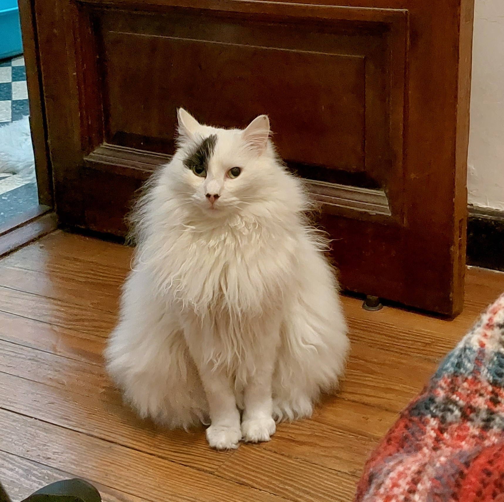
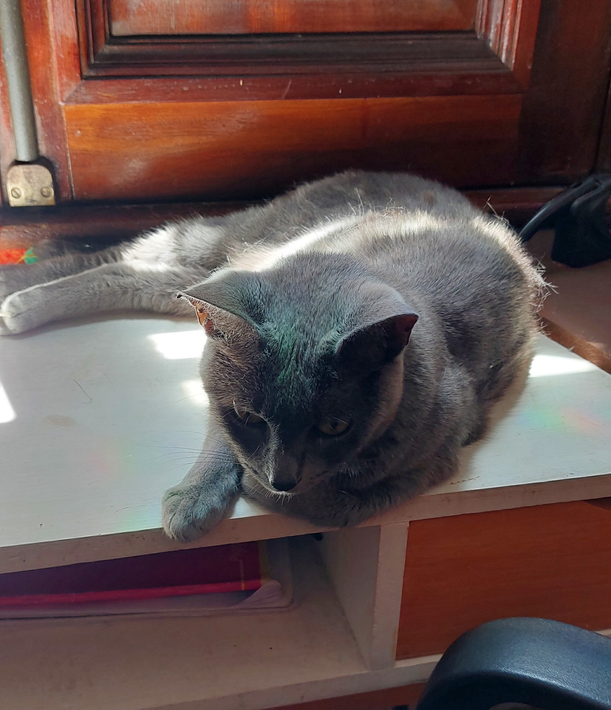
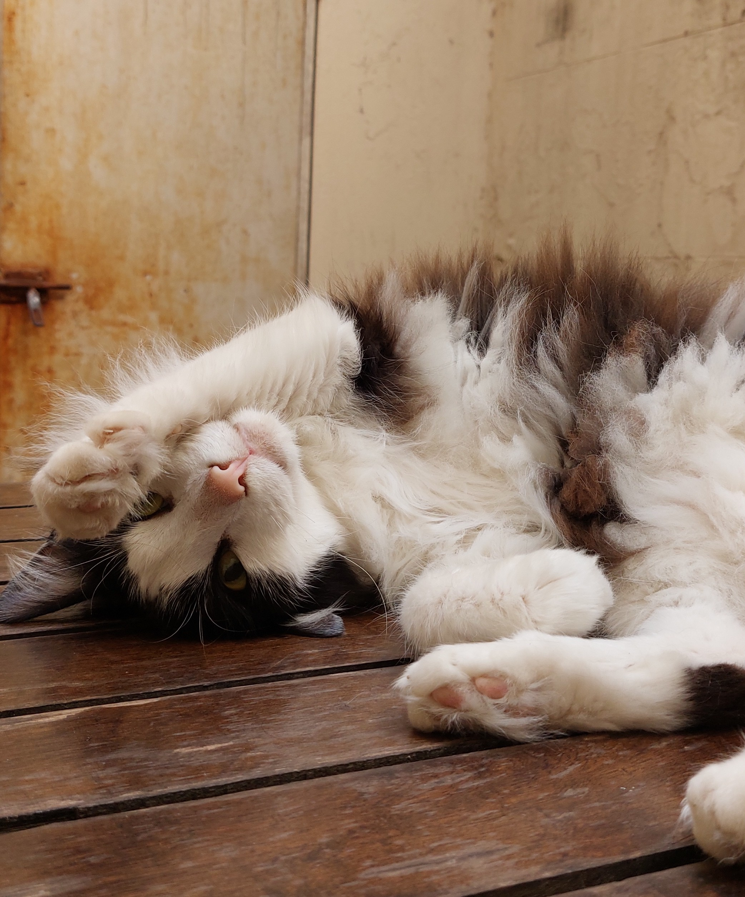
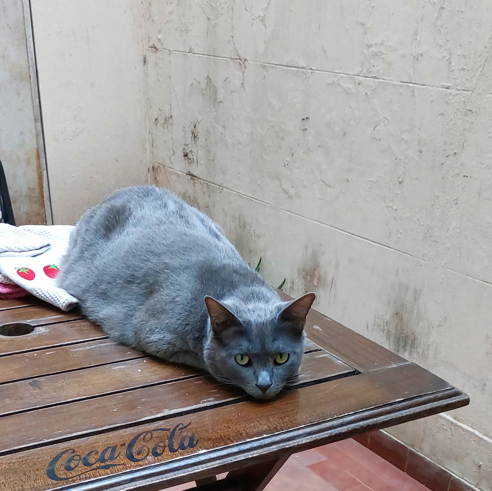
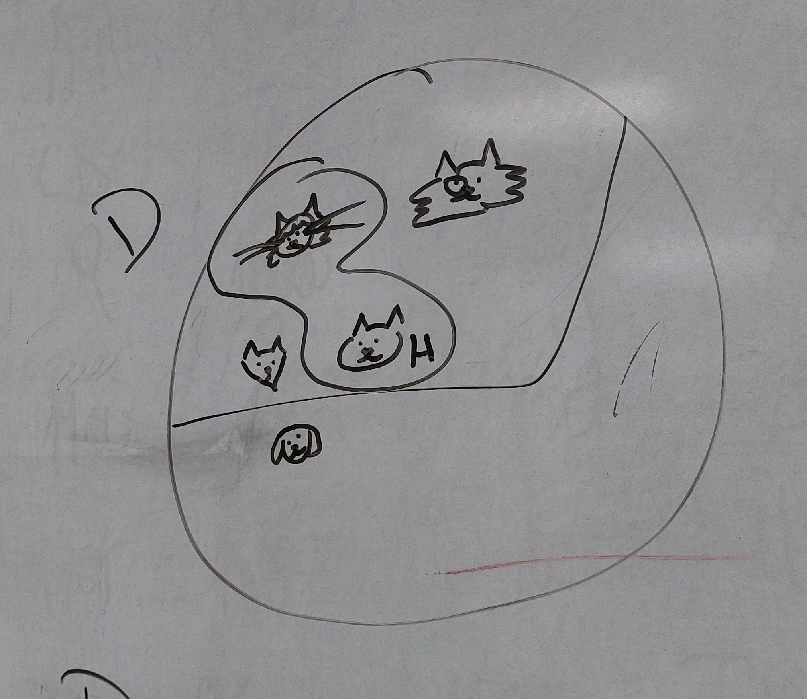
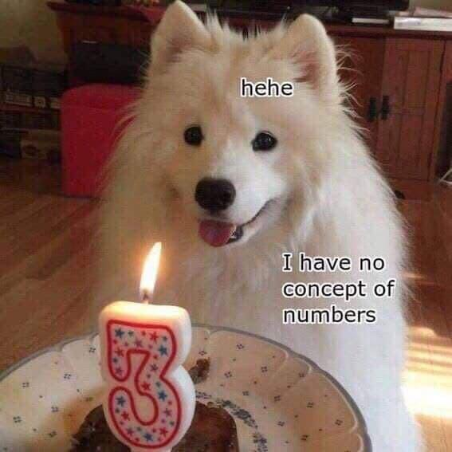

At home, I live with a metaphysical impossibility. Here you can see how this cat is both a perfect circle and a perfect triangle.

I would also like to post some pictures of my other cats. They don't hold any relevant philosophical property other than being determinately cute.



Still, they appear a lot during my classes.

Finally, here's my favorite meme and here's a ticket to the past.
